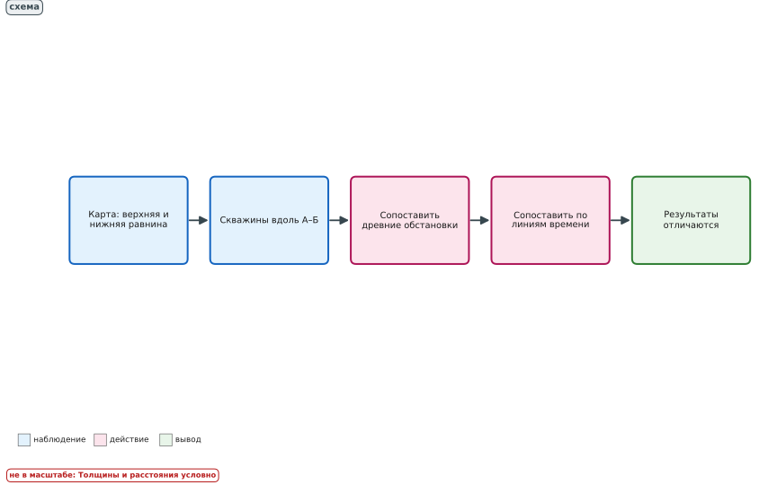

Стр. 411 · 9.4.1 Processes and Deposits
FIGURE 9.11 (a) Map view of Mekong River Delta. Upper delta plain is green and lower delta plain is orange. Black lines are beach ridges. Cross-sections A–B with well locations are shown.
Clinoforms; river-dominated delta deposits and reservoirsШаг 4 из 14
В книге: «Процессы и отложения» стр. 411–412
Опирается на: шаг 3 «Меконг: время и границы пород» (предпосылка), шаг 2 «Почему похожие пески не связаны» (пример)
Карта связывает скважины с линией разреза.
Разрезы по древним обстановкам и по времени по-разному связывают осадочные единицы.




Начинаем с двух частей дельтовой равнины.
Не в масштабе: Толщины и расстояния (условно). Допущения: Геометрия и шкалы, если есть, условные; схема не оцифрована из книги..
На карте цветом разделены верхняя и нижняя равнина дельты, чёрным обозначены береговые валы. На карте показана линия разрезов со скважинами. стр. 411
«Upper delta plain is green and lower delta plain is orange»
«Cross-sections A–B with well locations are shown»
Первый разрез коррелирует скважины на основе реконструкции древних обстановок. Датированные в тысячах лет линии пересекают границы пород и показывают выдвижение дельты. стр. 412
«Lithostratigraphic correlation of wells based upon paleoenvironmental interpretation»
«Numbered lines that crosscut lithofacies boundaries are measured geologic time lines in 1000s of years; they demonstrate the progradational nature of the delta. (c) Sequence stratigraphic (chronostratigraphic) correlation of wells based upon the time lines»
Второй разрез сопоставляет скважины по линиям времени. Выбор корреляции по породам или по времени меняет сопоставление осадочных единиц. стр. 412
«Sequence stratigraphic (chronostratigraphic) correlation of wells based upon the time lines»
«Note the difference in correlation of sedimentary units based upon the lithostratigraphic and chronostratigraphic correlation strategies»
Привязывают скважины к карте, после чего сравнивают две корреляции вдоль линии разреза.
Карта — индекс расположения записей, разрез — содержимое записей, а возраст — отдельный ключ.
Где аналогия перестаёт работать: Геологические временные линии выводятся из данных, а не назначаются автоматически.
Верный ответ: Выдвижение дельты
Положение линий времени демонстрирует проградацию. Где это в тексте (стр. 412) →
Верный ответ: Нижняя равнина; Верхняя равнина; Береговые валы
Карта отмечает части равнины и береговые валы. Где это в тексте (стр. 411) →
Чем руководствуется второй разрез?
Второй разрез сопоставляет скважины по .
Верный ответ: Второй разрез сопоставляет скважины по [линиям времени].
В основе второго сопоставления лежит возраст. Где это в тексте (стр. 412) →
Все утверждения шага с дословной цитатой автора и страницей книги (по PDF).
На карте цветом разделены верхняя и нижняя равнина дельты, чёрным обозначены береговые валы. наблюдение
«Upper delta plain is green and lower delta plain is orange»
На карте показана линия разрезов со скважинами. наблюдение
«Cross-sections A–B with well locations are shown»
Первый разрез коррелирует скважины на основе реконструкции древних обстановок. наблюдение
«Lithostratigraphic correlation of wells based upon paleoenvironmental interpretation»
Датированные в тысячах лет линии пересекают границы пород и показывают выдвижение дельты. наблюдение
«Numbered lines that crosscut lithofacies boundaries are measured geologic time lines in 1000s of years; they demonstrate the progradational nature of the delta. (c) Sequence stratigraphic (chronostratigraphic) correlation of wells based upon the time lines»
Второй разрез сопоставляет скважины по линиям времени. наблюдение
«Sequence stratigraphic (chronostratigraphic) correlation of wells based upon the time lines»
Выбор корреляции по породам или по времени меняет сопоставление осадочных единиц. наблюдение
«Note the difference in correlation of sedimentary units based upon the lithostratigraphic and chronostratigraphic correlation strategies»
Стр. 411 · 9.4.1 Processes and Deposits
FIGURE 9.11 (a) Map view of Mekong River Delta. Upper delta plain is green and lower delta plain is orange. Black lines are beach ridges. Cross-sections A–B with well locations are shown.
Стр. 412 · 9.4.1 Processes and Deposits
FIGURE 9.11—cont'd (b) Lithostratigraphic correlation of wells based upon paleoenvironmental interpretation. Numbered lines that crosscut lithofacies boundaries are measured geologic time lines in 1000s of years; they demonstrate the progradational nature of the delta. (c) Sequence stratigraphic (chronostratigraphic) correlation of wells based upon the time lines. Note the difference in correlation of sedimentary units based upon the lithostratigraphic and chronostratigraphic correlation strategies. After Gani and Bhattacharya (2005).
Меконг: карта и время
Ссылки в ответе ведут к исходному тексту.